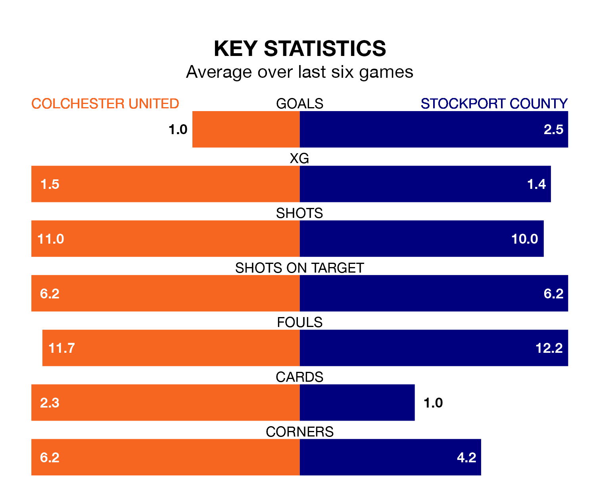

Relegation candidates Colchester United face a challenge against high-flying Stockport County at the JobServe Community Stadium on Tuesday.
Colchester United are 23rd in the EFL League Two table, and have picked up nine wins and 11 draws in their 40 games to date.
The Hatters, meanwhile, are top of the standings with 80 points, having won 23 and drawn 11 of their first 41 matches.
With 82 goals in 41 games so far this season, Stockport are the league's second-highest scorers with 2.0 goals per game. And they are conceding fewer than average, letting in 41 goals at a rate of 1.0 per game.
Colchester, meanwhile, are below average scorers, with 1.3 goals per game, compared to a league average of 1.5. They have conceded 1.8 goals per game.
In Ben Hinchiffe, County can rely on one of the league's safest pair of hands. He has kept 16 clean sheets in his 41 appearances this season, and no 'keeper has prevented the opposition scoring more often in EFL League Two.
In United's net, Owen Goodman has four clean sheets in 37 games. He has conceded a goal every 67 minutes, 40% more often than the 95 minutes between goals for Hinchiffe.
The U's are in disappointing form in EFL League Two, with one win and three draws from their last six games.
With four wins and two draws over that period, the Hatters' form is much better – they have taken 14 points from 18, compared to the hosts' six.
In the last three years, Colchester and Stockport have played each other on three occasions. Stockport won all of them.
Their last meeting was on November 18, when Stockport won 2-0 at home.
Colchester's last match was on Saturday, a 2-1 loss against Wrexham, with John Akinde getting the goal for the U's.
Stockport beat Sutton United 3-1 last time out, also on Saturday, with Paddy Madden on the scoresheet.
Tuesday's match will be refereed by Scott Oldham, who has taken charge of 11 EFL League Two games so far this season, issuing no red cards and booking 37 players. He has awarded three penalties.
The last Colchester game Oldham refereed was a 3-2 away win against Grimsby Town on October 24. He is yet to oversee a match featuring Stockport this season.
Updated: 11:20 (UTC), 09/04/24